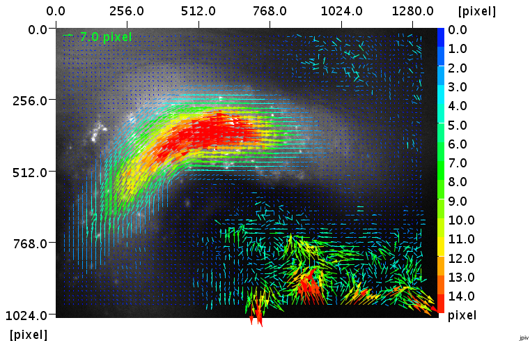
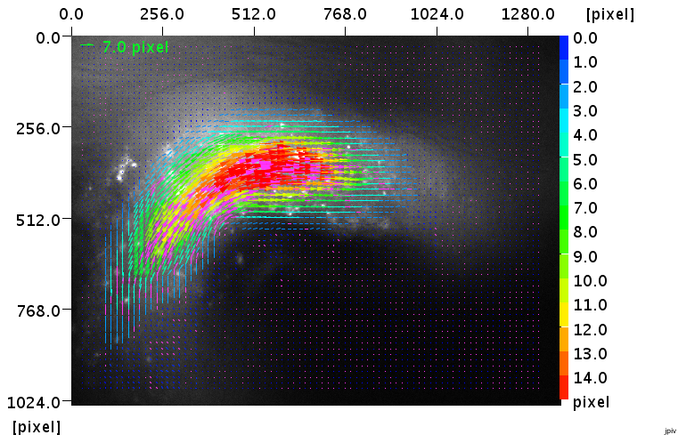
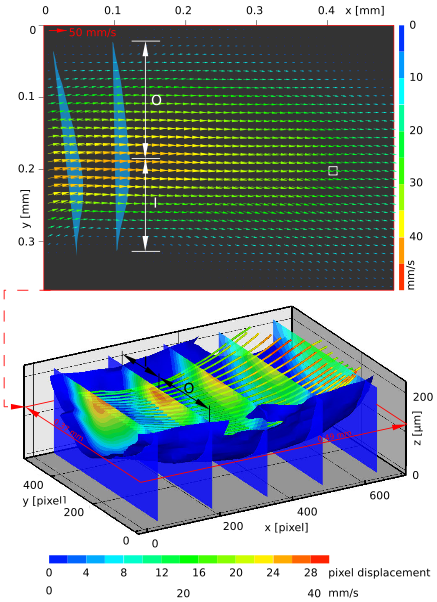

home
download
introduction
quick start
how to
reference
scripting
javadoc
repository
troubleshooting
For single pixel ensemble correlation, you need hundreds or even thousands of small images of a steady flow. The interrogation window size can then be reduced to a single pixel (see Westerweel et al., Exp Fluids, 37:3 375-384, 2004 for details). Single pixel ensemble correlation (or two-point correlation) is escpecially useful, if you want to measure steady flows at high magnifications, e.g. in microfluidics. Load the files that you want to process into the "Files" window and select them. In the "Settings" window, open the tab PIV - Single Pixel Correlation and modify the parameters. Start the evaluation by choosing PIV - run single-pixel-sum-of-correlation from the menu bar. You are asked about a filename for the output. Wait until the link to the result file is added to the list of files in the "Files" window.

Single pixel ensemble evaluation of 1000 64×64 pixel images with sparse seeding
Use Script - process_directories. If the script is not linked in the Script drop down menu, check if the path is correcty set.
In most cases, image preprocessing means to substract the background. Use Script - remove_sliding_background. If the script is not linked in the Scipt drop down menu, check if the path is correcty set. You need at least three images to generate a valid background image.
For other operations, for example rolling ball background substraction, I recommend to use ImageJ.
ImageJ example:
1. Open a couple of images.
2. Execute the menu item 'Image - Stack - Images to Stack'.
3. Extract the background by executing 'Image - Stack - ZProjection' and selecting 'Min Intensity' in the user dialog.
4. Substract the background using the command 'Process - Image Calculator'. Use 'Stack' as the source, 'Substract' as the operation and 'MIN_Stack' as the substrahend.
5. Dissolve your stack with 'Image - Stack - Stack to Images'.
6. Save the images.

Particle image with static features in the background (spawning goby, courtesy of Benjamin Meunier, Corkum Lab, University of Windsor ).

The same image as above, after preprocessing.
Use Script - split_selected_images or Script - join_selected_images to convert double frame images into single frame images or vice versa. If the script is not linked in the Scipt drop down menu, check if the path is correcty set.
Use Script - apply_mask. If the script is not linked in the Scipt drop down menu, check if the path is correcty set. Either Matlab or Octave should be available in the path of your environment.
The drop-down menu Vector contains a collection of vector postprocessing and vector analysis tools. The corresponding parameters can be altered in the "Settings" window on the Vector Processing panels. A very robust outlier detection is the normalized median test. It can successfully be applied to almost every PIV evaluation. See the documentation for a detailed description. The detected ouliers can be visualized by selecting the checkbox Label invalid vectors on the panel JPIV - Preferences - Vector Plot, and redisplaying the vector file. Vectors marked invalid can be replaced by executing Vector - replace invalid vectors by median. See the images below for an example. Here, also the script Script - wall_filter was applied to remove the random correlations outside the vector field. Also check the script Script - batch_vector_filtering for applying a set of repetitive filters at one go.

A raw PIV evaluation result (blood flow in an embryonic chicken heart).

The same image as above, after postprocessing. Replaced vectors are marked pink.
Use Script - 2example_resample_vector_field to rotate a vector field. In this way, you may align one dimensional flows with the image border. If the script is not linked in the Scipt drop down menu, check if the path is correcty set. The script serves as an example for integrating Matlab/Octave scripts into the JPIV workflow. Either Matlab or Octave must therfore be present in the path of your environment.
In the "Settings" window, open the panel Vector Processing - Profile Extraction and modify the parameters. Open a velocity field and display the context menu by right clicking somewhere on the vector plot. Select draw profile line. Set the first end point of your velocity profile with the left mouse button. Keep the button pressed and drag the mouse to draw a line. Release the mouse button to mark the end point of the profile. The velocity field is interpolated along the line. Depending on your settings on the Vector Processing - Profile Extraction panel, some profile properties are printed into the "Cmd" window. From the area of the profile you may derive a flow rate.

A velocity profile.
Under some circumstances, you can reconstruct the fully three-dimensional flow field from a set of parallel-plane-measurements. The conditions and the procedure are shortly explained in the documentation. A more detailed explanation and some notes about the accuracy and sensitivity can be found in chapter 4.7 of my thesis).

An example for a 3d reconstruction of a parallel-plane measurement (see figure 5.7 of my thesis for more information.
Display the context menu of a vector field plot (right mouse button). Select export as pixel image for pgm, tiff, and png or export as vector graphics for swf, emf, svg, eps, and pdf.
You can also use Script - batch_export_vector_plots. The script allows to generate a flow profile at the same position to show pulsating flows, for example. Also the background image can be adjusted.
Display a PIV image and right click somewhere in the image to display the context menu. Select show correlation map. The correlation function is calculated for a rectangle that has its upper, left corner at the position of the mouse. At the moment, this function is only supported for double images. The size of the interrogation area is defined on the JPIV - PIV - Interrogation Window panel. Only the parameters Interrogation window width and Interrogation window height of the first pass are considered. The magnification of the correlation function is identical to the image magnification (set on the Preferences - Image Display panel). The correlation functions float on top of your image. You can delete them by clicking on them.

A correlation function of 64×64 pixel.
Select the check box Export correlation functions on the JPIV - PIV - Interrogation Window panel. The correlation functions are exported as 32 bit tif files. Use the Vector input field to specify the correlation map you want to export. The correlation maps are counted from left to right and from top to bottom, starting with zero for the first vector in the upper left corner. Fill in -1, if you want to export the correlation maps of all vectors. Fill in -1 into the Pass input field, if you want to export the correlation maps of all evaluation passes. If you want to export only the correlation functions of a specific pass, specify the number of the pass here, starting with zero for the first one. Check Only Sum Of Correlation if you prefer exporting only after all correlations are summed up. You find the correlation functions in the same directory as the vector files.
You may want to use ImageJ for displaying the correlation function.

ImageJ plots of exported correlation functions belonging to the second vector in the second row (number 31). The 64×64 pixel correlation function belongs to the first pass. The smaller function belongs to the second pass. The correlation peak of the second pass is almost in the centre of the correlation function, because of pre-shifting the correlation windows according to the first pass. In this way, the second correlation peak is also higher than the one of the first pass, although a smaller window was chosen.
Use Script - generate_synthetic_images_2d or Script - generate_synthetic_images_3d_stack. If the scripts are not linked in the Scipt drop down menu, check if the path is correcty set. You should be on Linux, because JPIV uses the Europiv II Synthetic Image Generator, that is only compiled for Linux at the moment.
At the Laboratory for Aero- and Hydrodynamics of the TU Delft, you can use JPIV as a front-end for the command line PIV analysis package PIVware, by Jerry Westerweel. The two scripts pivware_piv_evaluation.jsc and pivware_tools_collection.jsc should be directly accessible via the Script menu in the menu bar. Execute them, to see a description.
Example:
Use the PIVware tools script, to calculate the vorticity distribution of your flow field. First, select some velocity data files in the "Files" window. Execute the script by choosing Script - pivware_tools_collection from the menu bar. The following dialog appears.

The PIVware vector processing dialog.
Select the command flipy | vortlp | flipy and press execute. Afterwards you are asked about an output filename. Wait until the result appears in the "Files" window. You can visualize the vorticity in the vector plots as a color coded background. Just expand the tree nodes in the "Settings" frame to see the "Preferences - Vector Plot" panel. Select Color coding for the background and set the Data column to 4. Deselect color coding for Vectors and choose a dark vector color. Now display one of the post-processed vector fields.